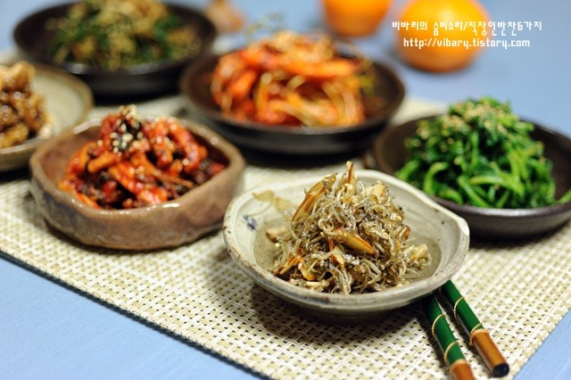

Types
- Pickled Vegetables: Kimchi
- Sauces: 고추장
- Oils: 기름, 참기름
- Pan cooked: 닭갈비
- Soups:
Pickled Vegetables
/kimchi-dish-served-on-a-white-plate-173021127-588b8a945f9b5874ee55f535.jpg)
A staple of the korean diet, kimchi is served as a side dish, usually before and and long side main entrees
- 
Banchan, various dishes served before and during entrees, include vegatables, perhaps seafood. The selection and number of banchan depends on the restaurant.
-
Pickled cucumbers